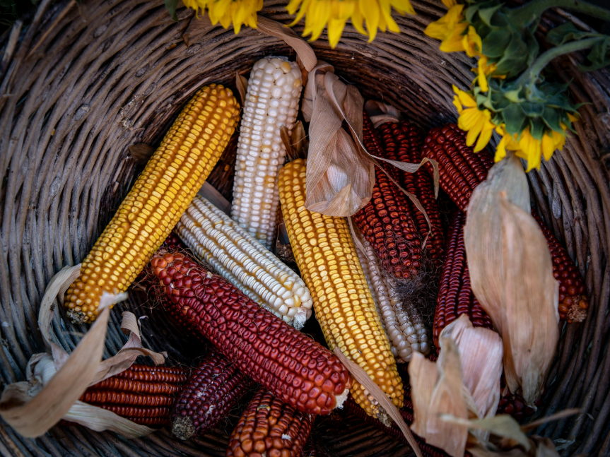

Antes que a comunidade possa consumir os frutos da nova colheita, os grãos sagrados — com destaque para o milho tradicional (avatí) — passam pelo Ñemongarai. Na cosmovisão Ñandeva, a terra (Tekoha) e os frutos são dádivas das divindades, exigindo um rigoroso processo de consagração para purificar a colheita de qualquer peso espiritual acumulado.
Somente após a bênção conduzida pelos rezadores na Casa de Reza (O'guasu), os alimentos tornam-se puros para serem ingeridos sem causar danos ao corpo ou ao espírito (ñe'ẽ), renovando o ciclo da abundância e a comunhão coletiva.

Diversidade de sementes tradicionais de avatí preservadas pela comunidade.
📚 Referências e Fontes Especializadas:
CHASE-SARDI, Miguel; ZANARDINI, José.Textos Míticos dos Indígenas do Paraguai (Compilação etnográfica que documenta de forma direta os rituais agrícolas e a cosmogonia dos Ava-Guarani).
(Ver Obra Digitalizada)
GARCIA, Wilson Galhego.Introdução ao universo botânico dos Kayová/Ñandeva (Pesquisa antropológica sobre o manejo tradicional e a classificação sagrada das plantas de cultivo).
(Portal Guaraní)
A Atribuição do Nome Verdadeiro
Momento ápice do ritual. Na tradição Ñandeva, o nome verdadeiro não é escolhido por estética: ele é recebido do mundo espiritual pelos rezadores ou anciãos durante os cânticos sagrados na Casa de Reza (O'guasu).
Esse nome revela a essência e a proteção divina da pessoa, garantindo a sua cidadania cósmica e o alinhamento pleno do seu espírito (ñe'ẽ) com as divindades na caminhada pelo Tekoha.
Um grupo de Guarani Ñandeva durante uma reunião religiosa em uma reserva guarani, Mato Grosso do Sul, Brasil.
📚 Referências e Estudos Antropológicos:
NIMUENDAJÚ, Curt.Os Índios Apapocúva-Guarani (Aborda diretamente os rituais de atribuição de nomes e a cidadania cósmica no subgrupo).
(Acessar no Portal Guaraní)
ALMEIDA, Rubem Ferreira Thomaz de.O Projeto Kaiowá-Ñandeva: uma experiência de etnodesenvolvimento (Panorama da organização social e cultural contemporânea dos Ñandeva).
(Consultar Acervo)